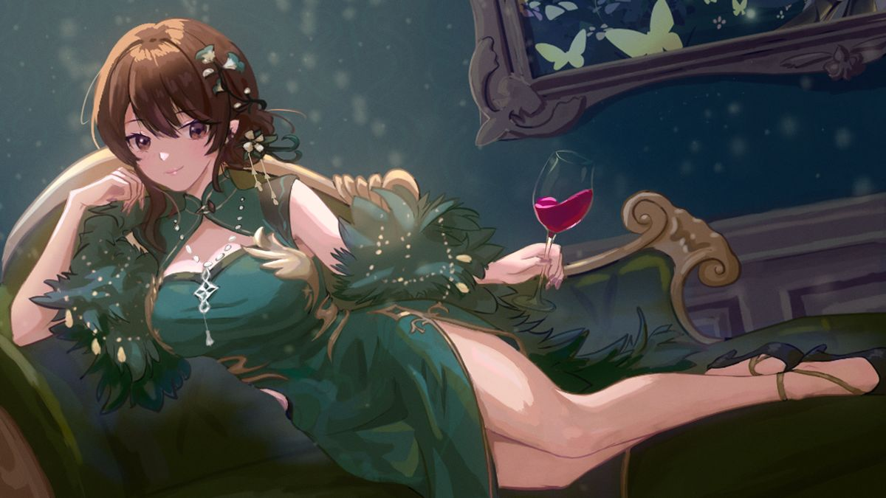
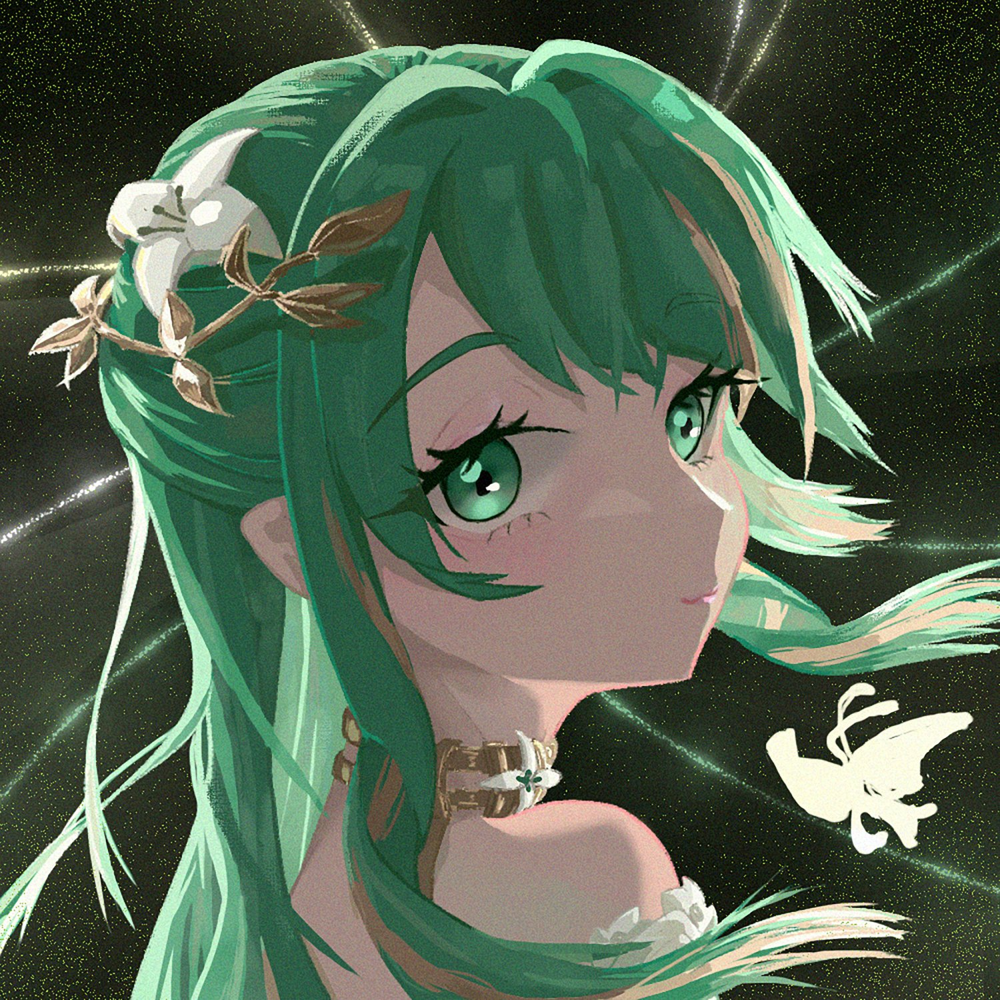
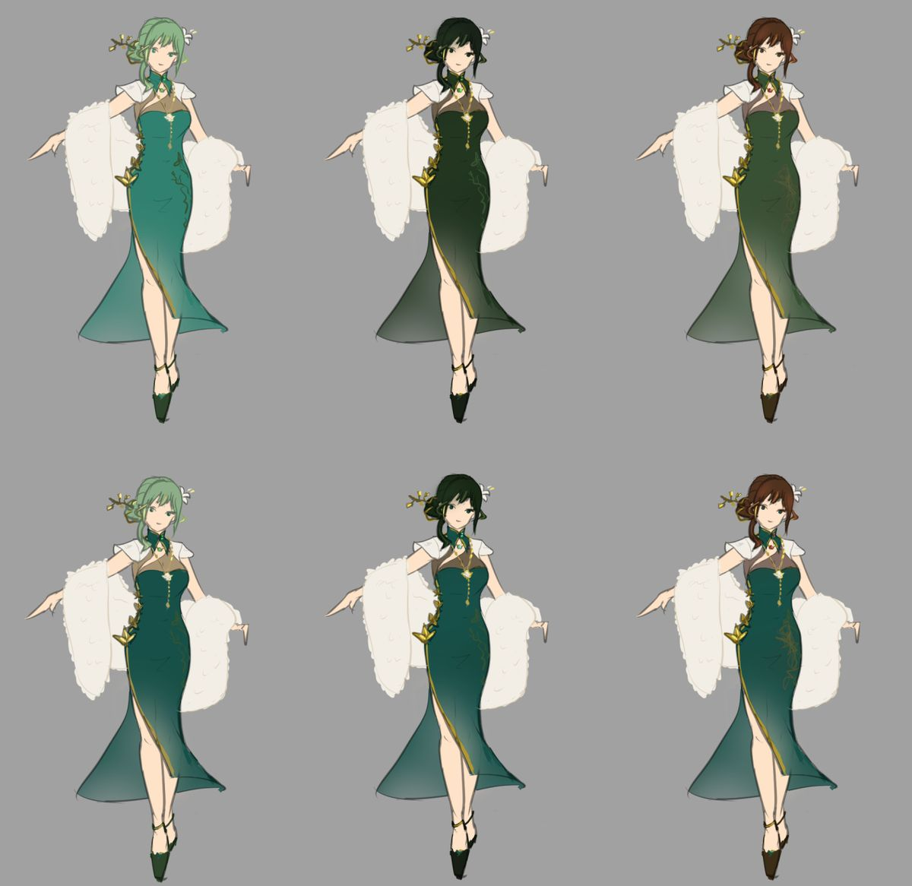
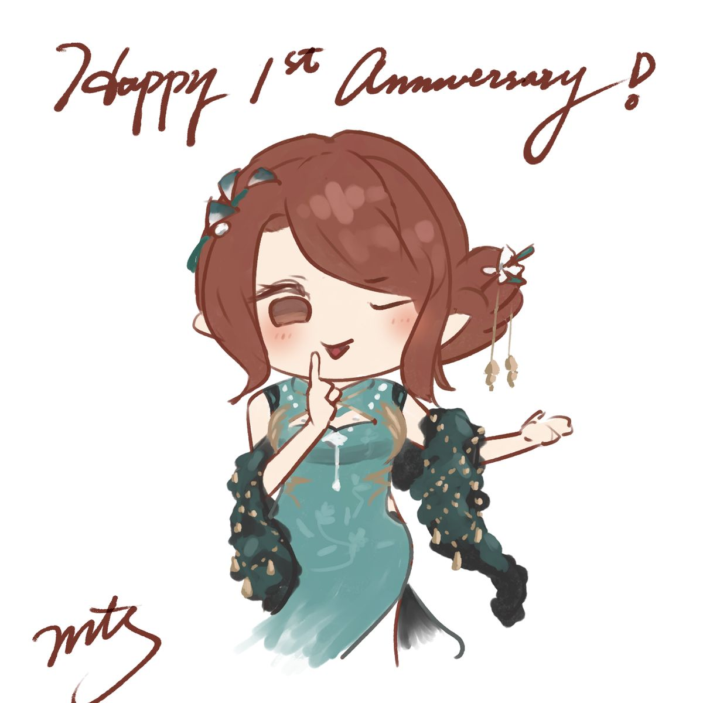

Digital Art
Commissions & Animated Stickers
Digital drawings: commission work and animated stickers.



Commissions
Commission work: the first-anniversary illustration at the top, an avatar, an outfit sheet in six colourways and a chibi drawing in the same outfit.
Animated Stickers
Two sticker sets. For the podcast 不下不上 (In-Between), 2026: its two characters, Yama and Bolo, drawing, typing and talking. For Pendragon, 2024 to 2025: a set of three, a birthday sticker and a New Year greeting.